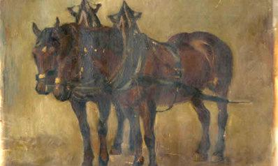
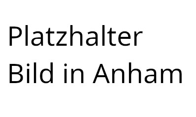

<!-- ======= About Section ======= -->
<div class="container" data-aos="fade-up">

  <div class="row no-gutters">
    <div class="content col-xl-5 d-flex align-items-stretch">
      <div class="content">
        <h3>Helmut Feigl über Pferdezucht und Anham</h3>
        <p></p>
        <p><small>Die Zugpferde meines Großvaters.
            <br>Ölmalerei von Hans Biller um 1900.</small></p>
        <p></p>
      </div>
    </div>
    <div class="col-xl-7 d-flex align-items-stretch">
      <div class="icon-boxes d-flex flex-column justify-content-center">
        <div class="row">
          <div class="col-md-6 icon-box" data-aos="fade-up" data-aos-delay="100">
            <i class="bx bx-receipt"></i>
            <h4>Erste Schritte</h4>
            <p>Obwohl ich aus einer "Nicht-Pferdefamilie" komme – lediglich mein Großvater betrieb ein Fuhrunternehmen
              mit von ihm sehr geliebten Pferden –, begann ich früh, zu voltigieren und zu reiten.</p>
            <p>Den endgültigen Weg zur Zucht ebnete eine zweijährige Lehrzeit am Bayerischen Haupt- und Landgestüt
              Schwaiganger unter der Leitung des damaligen Landstallmeisters Dr. Berthold Karnbaum.</p>
          </div>
          <div class="col-md-6 icon-box" data-aos="fade-up" data-aos-delay="200">
            <i class="bx bx-cube-alt"></i>
            <h4>Erste Zuchtschritte</h4>
            <p>Im Jahr 1983 erwarben mein Freund Jakob Maier und ich unsere erste Zuchtstute, Lustige v. Lugano I.
              Seither haben die Pferdezucht und der Pferdesport mein Leben lang begleitet und mich beschäftigt, und
              keiner Körveranstaltung unseres Zuchtgebietes bin ich seither ferngeblieben. Folgerichtig erfolgte nach
              dem Studium der Tiermedizin eine Spezialisierung auf das Fachgebiet Pferd.</p>
          </div>
          <div class="col-md-6 icon-box" data-aos="fade-up" data-aos-delay="300">
            <i class="bx bx-images"></i>
            <h4>Anham als Ort für Gleichgesinnte</h4>
            <p>Seit 2005 leben wir auf einem Anwesen in Niederbayern nahe Vilshofen/Passau, unweit des traditionellen
              Zuchtgebietes in Bayern, des Rottals.</p>

            <p>Im Laufe der Jahre gesellten sich Gleichgesinnte im Sinne der Zucht dazu, und so ist heute eine
              stattliche private Stutenherde unterschiedlicher Besitzer in Anham zuhause und zuchtaktiv. Uns verbindet
              das Interesse an leistungsorientierter Pferdezucht, an guten Mutterstämmen in der Zucht, der Reiz der
              Hengstwahl im Frühjahr, die Spannung in Erwartung der Fohlen und der Spaß bei den sommerlichen
              Fohlenprämierungsterminen des Verbandes.</p>
          </div>
          <div class="col-md-6 icon-box" data-aos="fade-up" data-aos-delay="400">
            <i class="bx bx-shield"></i>
            <h4>Danksagung</h4>
            <p>An dieser Stelle möchte ich allen danken, die ich im Laufe der vielen Jahre über das Thema Pferd kennen
              und schätzen gelernt habe. Mein Dank gilt allen, von denen ich etwas zum Thema Pferd lernen durfte, und
              für die Freundschaften, die rund um dieses Thema entstanden sind.</p>
            <p>Anham 16, Beutelsbach im Februar 2010</p>
            <p>Helmut Feigl</p>
          </div>
        </div>
      </div><!-- End .content-->
    </div>
  </div>

</div>
<!-- End About Section -->
